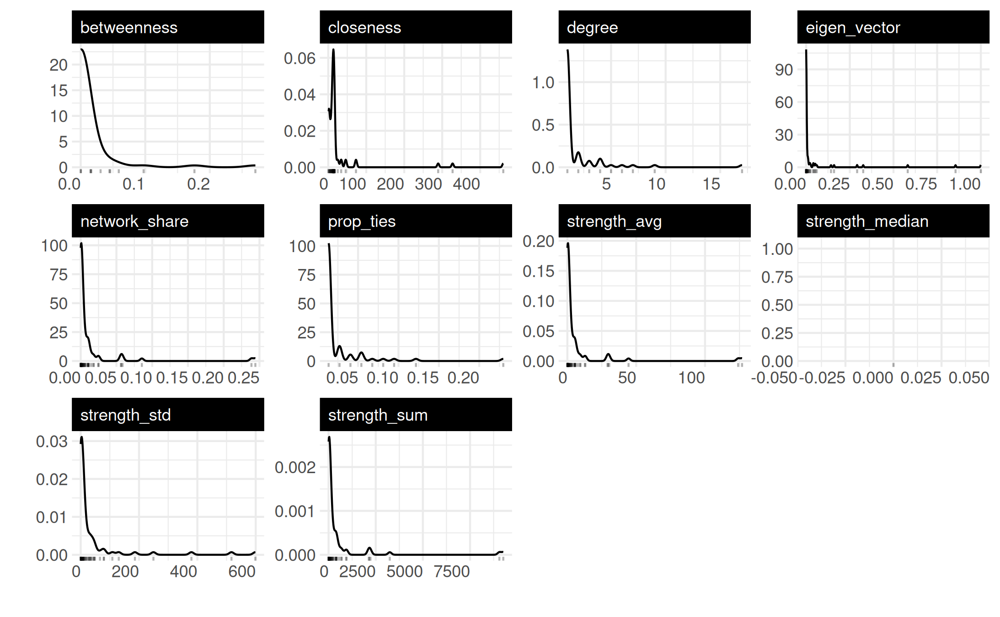
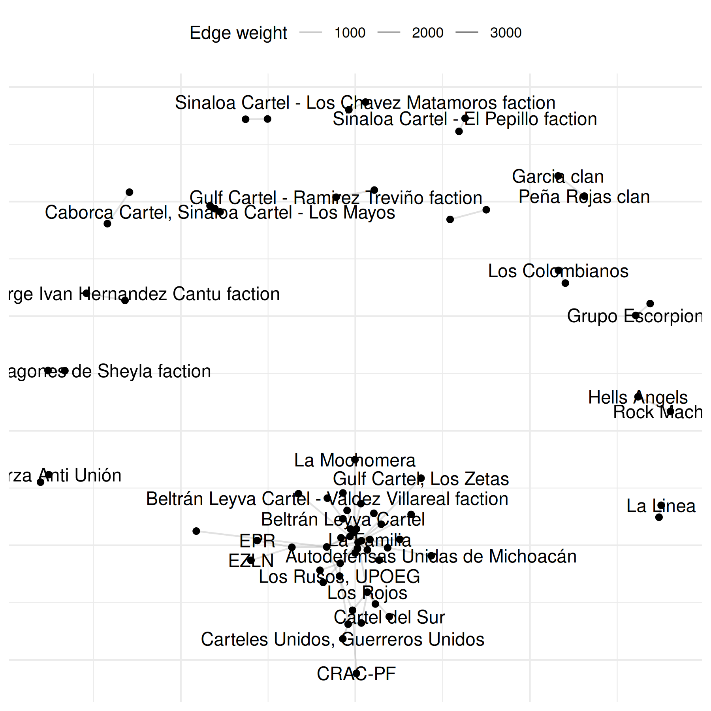
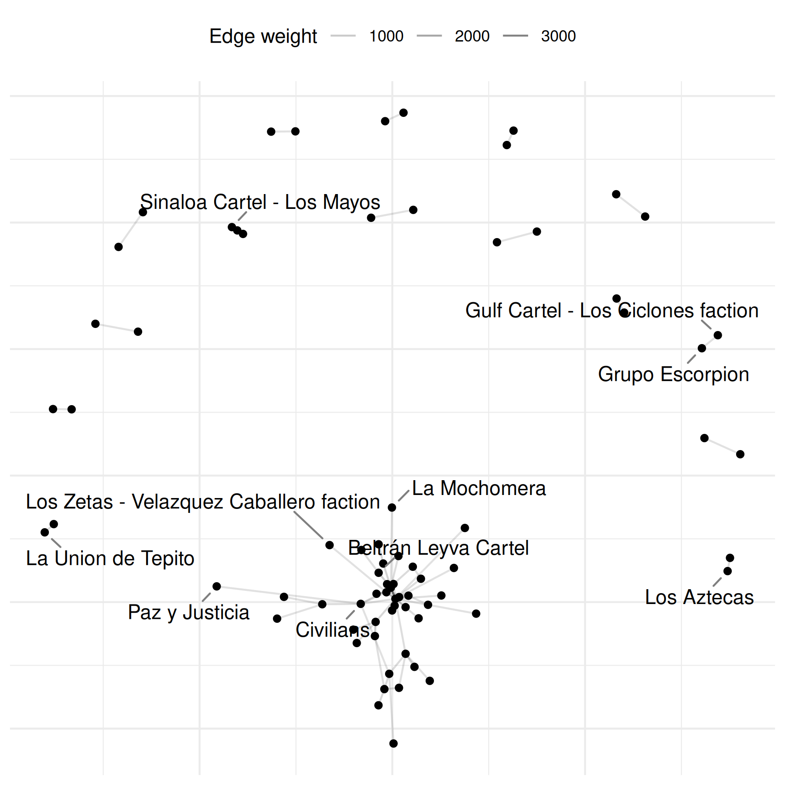
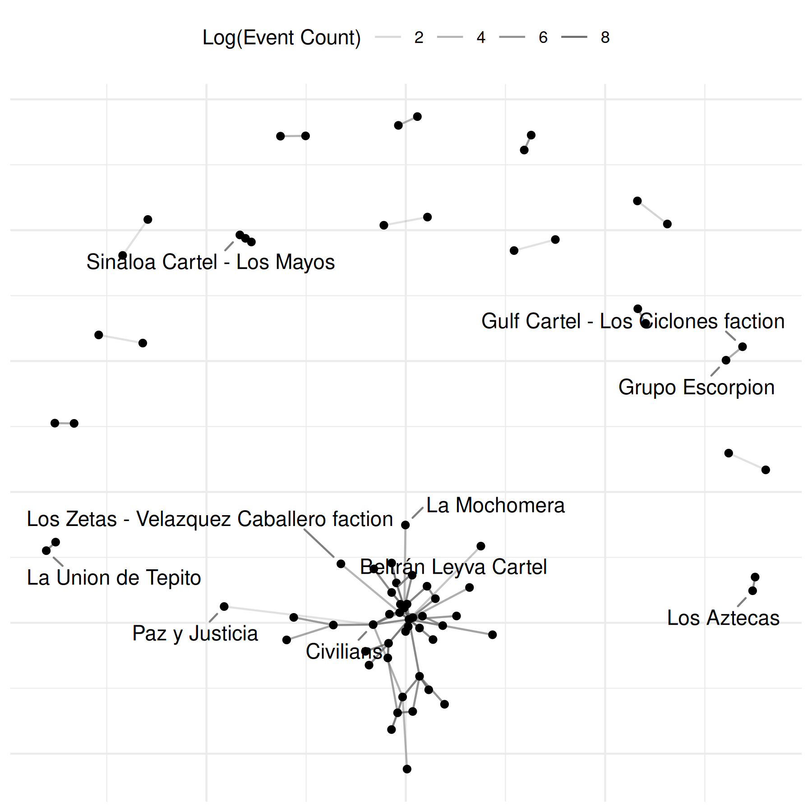
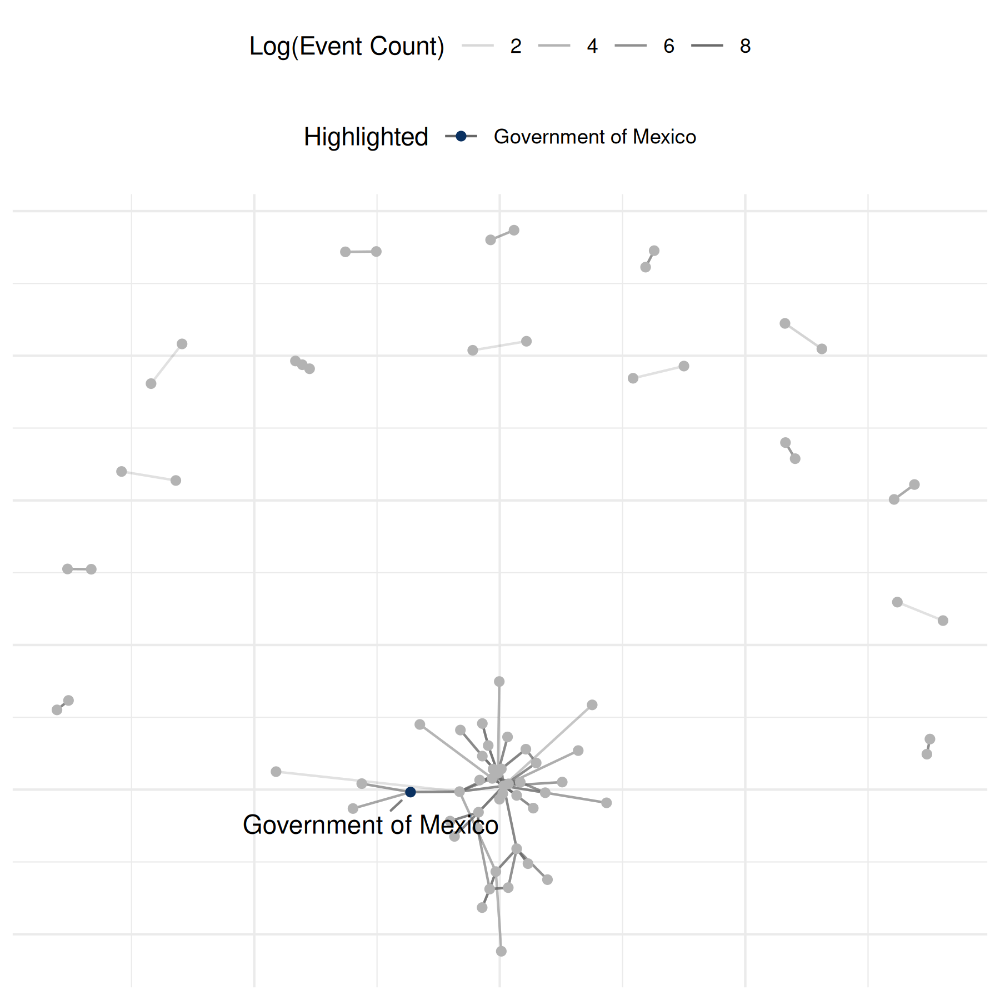
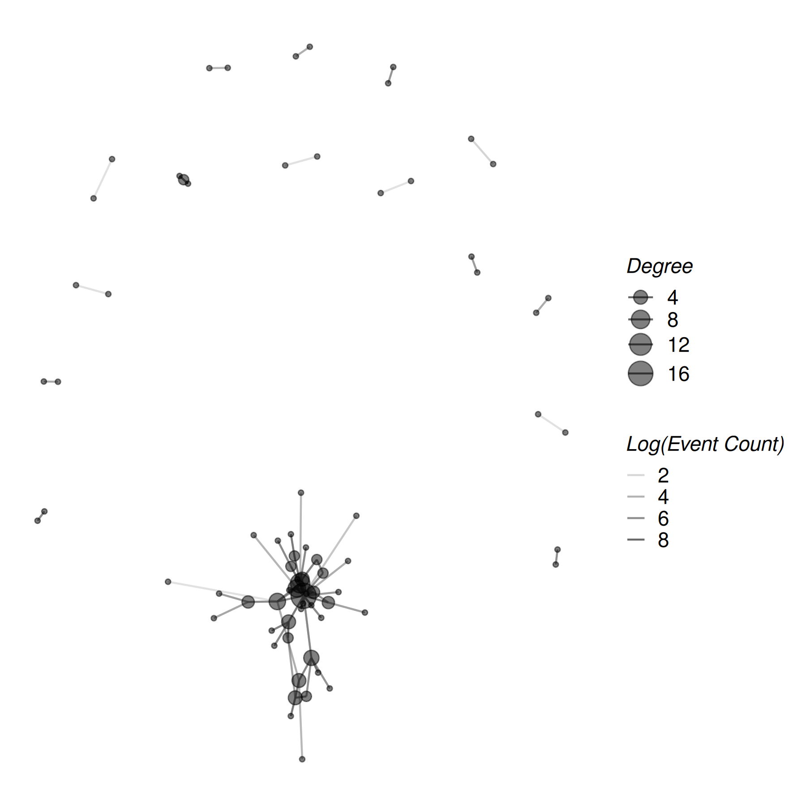
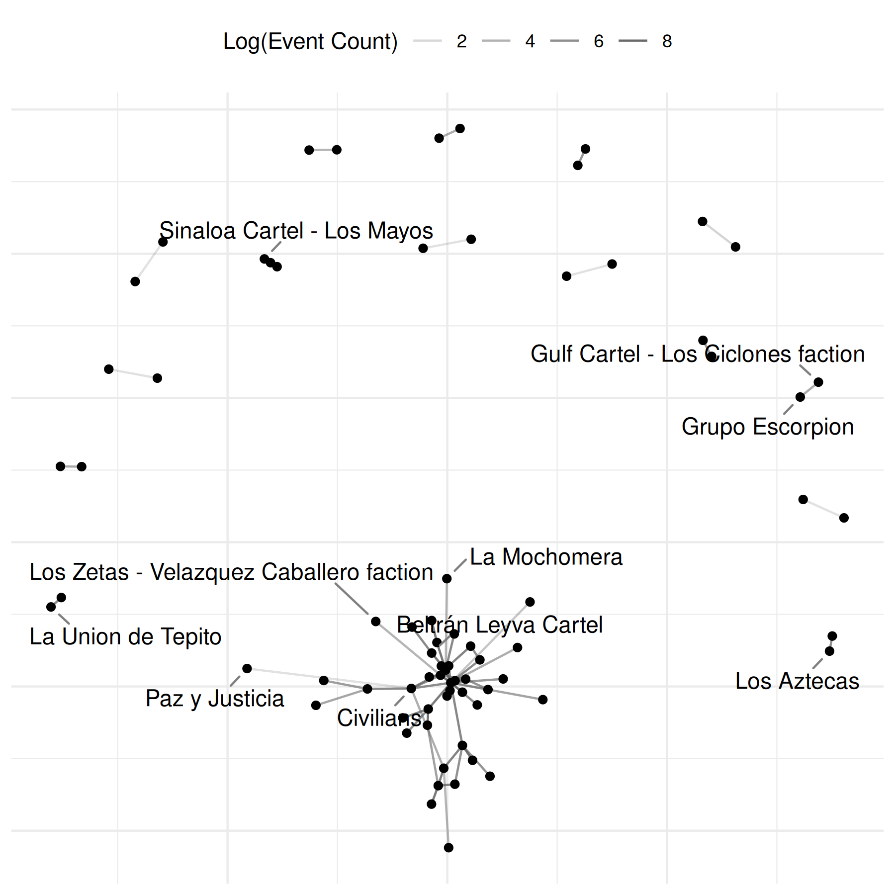
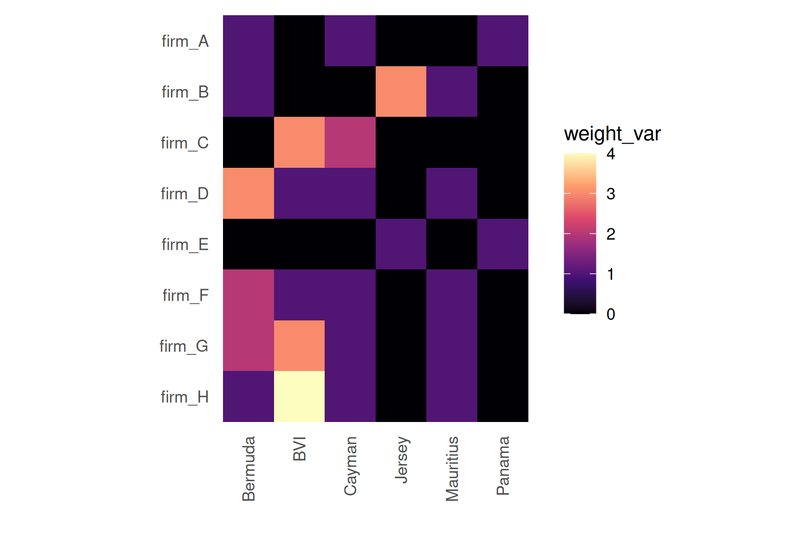
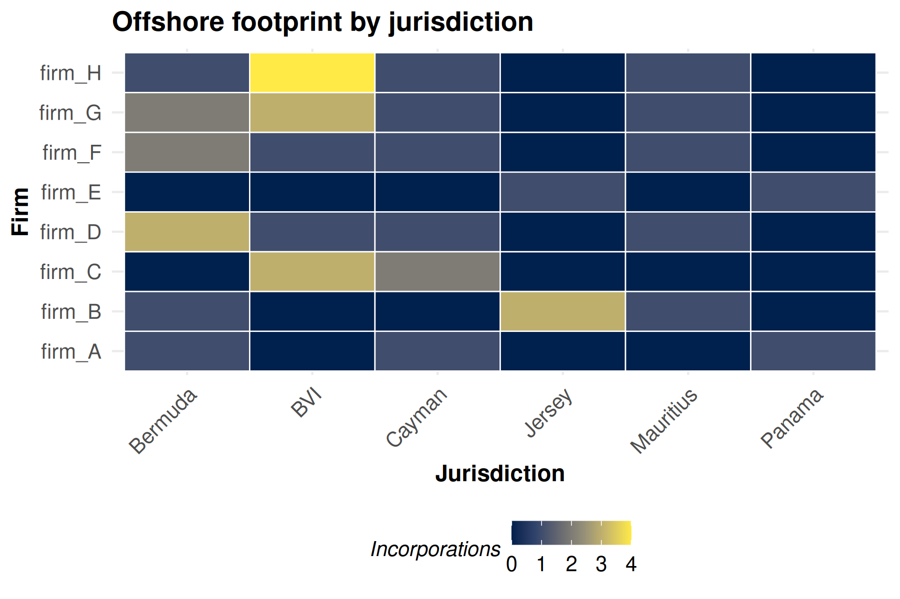
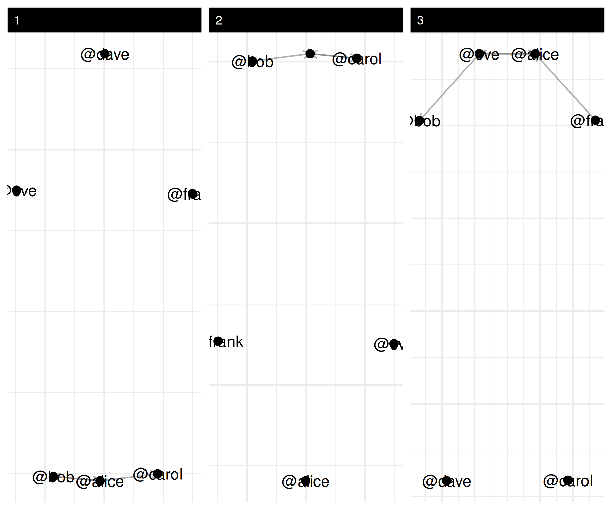

Event Data
Cassy Dorff and Shahryar Minhas
2026-06-20
Source:vignettes/event_data.Rmd
event_data.Rmdtl;dr
Event data come in two flavors. One-mode event data
(actor-on-actor: who fought who, who cited whom) becomes a unipartite
network. Two-mode event data (actor-on-venue: firms in
jurisdictions, attendees at meetings) becomes a bipartite network. This
vignette walks through both. Along the way we cover transforming
weights, single-actor highlighting, applying a ggplot theme, and how to
export a figure with ggsave().
one-mode event data: ucdp conflict in mexico
A common data type used to build conflict networks is event
data, where actors are repeated across rows but no single
column explicitly encodes an edge weight. netify() handles
this case by counting interactions when no weight is
provided.
We use UCDP GED data on Mexico as one example of an application to intrastate event data. The data come from https://ucdp.uu.se/downloads/ (version 23.1, subset to Mexico); the subset ships internally so the code below runs as-is.
-
Create: generate an aggregated, weighted network of
conflict between actors in Mexico. When the user does not supply a
weightvalue,netify()counts interactions and returns the count as the edge weight, with an informational message indicating that this has happened.
# load ucdp ged data on mexico
data(mexico)
# construct count-weighted network (number_of_events by default)
mex_network <- netify(
mexico,
actor1 = "side_a",
actor2 = "side_b",
symmetric = TRUE,
sum_dyads = TRUE,
diag_to_NA = TRUE,
missing_to_zero = TRUE
)## ! Warning: there are repeating dyads within time periods in the dataset. When `sum_dyads = TRUE` and `weight` is not supplied, edges in the outputted adjacency matrix represent a count of interactions between actors.
# summaries at the graph and actor levels
summary(mex_network)## net num_actors density num_edges prop_edges_missing mean_edge_weight
## 1 1 74 0.02554609 69 0 274.7391
## sd_edge_weight median_edge_weight min_edge_weight max_edge_weight competition
## 1 660.3139 58 1 3757 0.1371326
## sd_of_actor_means transitivity
## 1 21.37264 0.1046512
actor_stats <- summary_actor(mex_network)
plot_actor_stats(actor_stats)## Warning: Removed 55 rows containing non-finite outside the scale range
## (`stat_density()`).## Warning: Removed 55 rows containing missing values or values outside the scale range
## (`geom_rug()`).
tl;dr sidebar: na versus zero in event-count weights
Event counts have a sharp interpretation gap that does not show up
in, say, a 0/1 alliance network: the difference between “these
two actors were both in the data and recorded zero events
together” and “we have no information on whether these
two actors interacted at all” is the difference between a
substantive zero and a missing observation. The default
missing_to_zero = TRUE collapses both into 0.
For routine event-data uses this is what you want — a missing UCDP dyad
really does mean “no recorded violent event between these two sides in
this slice of the data,” which is closer to a substantive zero than a
Bayesian “we don’t know.” But for epidemiology / contact-tracing /
sparse rosters, the asymmetry matters and you’ll want
missing_to_zero = FALSE.
A 5-actor toy makes the bookkeeping concrete. Suppose four contact-tracing interviews surfaced four edges among five named individuals; the remaining dyads were never asked about:
tiny <- data.frame(
a1 = c("p1", "p1", "p2", "p3"),
a2 = c("p2", "p3", "p3", "p4"),
n_contacts = c(2, 1, 3, 1),
stringsAsFactors = FALSE
)
# preserve unobserved dyads as na
net_na <- netify(
tiny,
actor1 = "a1", actor2 = "a2",
weight = "n_contacts",
symmetric = TRUE,
missing_to_zero = FALSE,
nodelist = c("p1", "p2", "p3", "p4", "p5")
)
# the raw matrix carries explicit nas for the never-asked dyads
get_raw(net_na)## p1 p2 p3 p4 p5
## p1 NA 2 1 NA NA
## p2 2 NA 3 NA NA
## p3 1 3 NA 1 NA
## p4 NA NA 1 NA NA
## p5 NA NA NA NA NA
# summary() reports the missingness fraction in its own column when
# missing_to_zero = false
summary(net_na)[, c("num_actors", "density", "num_edges",
"prop_edges_missing", "prop_unknown_edges")]## num_actors density num_edges prop_edges_missing prop_unknown_edges
## 1 5 0.4 4 0.6 0.6prop_unknown_edges only shows up when
missing_to_zero = FALSE — that is the cue that the netlet
is actually carrying NA semantics downstream. Build the same netlet with
the default and the NAs are replaced with 0s and the column
disappears; that is fine for UCDP / GED event counts (the rest of this
vignette uses the default for exactly that reason) but it is the wrong
choice when “we did not measure this dyad” is a meaningful state.
-
Explore: next we use the basic
plot()method to visualize the network of violent interactions in Mexico. The simplest call labels every actor:

For a less cluttered view, pass a vector of actors to
select_text / select_text_display:
# select 10 random names for plotting
select_names <- rownames(mex_network)
set.seed(6886)
random_indices <- sample(length(select_names), 10)
random_names <- select_names[random_indices]
plot(mex_network,
select_text = random_names,
select_text_display = random_names
)
The graphs above reveal the need to transform the edge weights to
increase interpretability. Logging the values is a common move. The
netify plot function has a built-in parameter for this —
pass any function to mutate_weight (see also the general
mutate_weights() function for transforming weights outside
of plotting). The edge_alpha_label parameter just relabels
the resulting legend:
set.seed(6886)
plot(mex_network,
select_text = random_names,
select_text_display = random_names,
# log(x+1) to better see the range of connections
mutate_weight = log1p,
edge_alpha_label = "Log(Event Count)"
)
highlighting a single actor
Often there is one actor you really want to call out — a focal group,
a state agency, a single firm. plot.netify() supports this
directly via highlight=, which takes either a character
vector of focal actors or a named color vector mapping actor names to
colors:
focal <- "Government of Mexico"
set.seed(6886)
plot(mex_network,
mutate_weight = log1p,
edge_alpha_label = "Log(Event Count)",
highlight = focal,
highlight_color = c("Government of Mexico" = "#0A3161", "Other" = "grey70"),
select_text = focal,
select_text_display = focal
)
The focal actor is now visually distinct from the rest of the network — useful for storytelling and for slide decks.
applying a theme
Drop on theme_publication_netify() — a ggplot theme with
a larger base font, italic legend titles, and stripped axes (the right
default for force-directed layouts):
# add degree centrality from summary_actor()
actor_stats <- summary_actor(mex_network)
actor_stats$degree_group <- ifelse(
actor_stats$degree > median(actor_stats$degree, na.rm = TRUE),
"higher degree",
"lower degree"
)
mex_network <- add_node_vars(
mex_network,
actor_stats,
actor = "actor"
)
set.seed(6886)
plot(mex_network,
mutate_weight = log1p,
edge_alpha_label = "Log(Event Count)",
node_size_by = "degree",
node_size_label = "Degree",
node_alpha = .5,
check_overlap = TRUE
) +
theme_publication_netify()
theme_publication_netify() is built for network layouts
(no axes). For actor-level summaries or heatmaps — where you do
want axes — use theme_publication_netify_ts() (the
_ts is for “tables / time-series”, anything that isn’t a
node-edge layout).
saving the figure
Once you have a plot you like, export it with ggsave().
A vector format (PDF or SVG) holds up at any size; for the web or
social, a PNG at 300 dpi is fine.
# the last plot rendered is captured by ggsave() by default
ggsave("mexico_conflict.pdf", width = 7, height = 6)
# pass a named plot object
p <- plot(mex_network, mutate_weight = log1p) + theme_publication_netify()
ggsave("mexico_conflict.png", plot = p, width = 7, height = 6, dpi = 300)a note on color choice
Colors matter for accessibility — roughly 8% of men and 0.5% of women have some form of color vision deficiency. When you encode a variable in color, prefer a colorblind-safe palette. Two easy options:
-
ColorBrewer qualitative palettes like
Set2,Dark2, andPairedare colorblind-safe by design. Usescale_color_brewer(palette = "Set2")or just passnode_color_palette = "Set2"toplot.netify(). -
viridis (
viridis,magma,plasma,cividis) gives a perceptually uniform, colorblind-safe gradient for continuous variables.
# example: colorblind-safe categorical fill via plot.netify()
plot(mex_network,
node_color_by = "degree_group",
node_color_palette = "Set2" # colorbrewer colorblind-safe
) +
theme_publication_netify()
# example: colorblind-safe continuous color, manual
plot(mex_network, node_color_by = "degree") +
scale_color_viridis_c(option = "cividis") +
theme_publication_netify()advanced: assemble the plot from components
For most uses the calls above are enough. If you want full control
over how the layers are stacked — say, to insert a custom annotation
between the edge layer and the node layer — set
return_components = TRUE and reassemble the pieces
yourself.
# investigate each component of the plot
set.seed(6886)
comp <- plot(
mex_network,
remove_isolates = TRUE,
select_text = random_names,
select_text_display = random_names,
mutate_weight = log1p,
return_components = TRUE
)
comp## ## ── Netify plot components ──## ## • Base plot: ggplot object## • Edges: geom_segment/geom_curve layer## • Points: geom_point layer## • Text Repel: geom_text_repel layer## • Theme: theme_netify## ℹ Use `assemble_netify_plot()` to build or construct manually with
## `netify_edge()`, `netify_node()`, etc.
# modify component
comp$base +
netify_edge(comp) +
labs(alpha = "Log(Event Count)") +
reset_scales() +
netify_node(comp) +
netify_text_repel(comp) +
comp$theme
a note on missingness
When you build a network from event data, netify() by
default fills unobserved dyads with 0
(missing_to_zero = TRUE). For some applications — contact
tracing, animal interactions, partially-observed survey rosters — the
difference between observed-no-interaction (0) and
not-observed-at-all (NA) matters. Set
missing_to_zero = FALSE to keep NAs as NAs. Similarly,
actor_time_uniform = FALSE lets actor composition vary
across periods (useful for open-cohort longitudinal data); the netlet
then stores an actor_pds data.frame recording each actor’s
entry / exit window. See ?netify for details.
two-mode (bipartite) event data: offshore jurisdictions
Event data are not limited to one-mode actor-on-actor interactions. People attending venues, students enrolling in classes, firms registered in jurisdictions — anywhere two distinct sets of entities are linked by observed events — calls for a bipartite network.
A concrete data-journalism example: leaks like the Panama Papers or Paradise Papers connect entities (companies, trusts) to jurisdictions (tax havens). Each entity-jurisdiction pairing is an event (“firm X was incorporated in haven Y”). The result is a two-mode network with firms on one side and jurisdictions on the other.
# toy offshore-leak data: firms incorporated in jurisdictions
set.seed(6886)
firms <- paste0("firm_", LETTERS[1:8])
havens <- c("BVI", "Cayman", "Bermuda", "Jersey", "Panama", "Mauritius")
offshore <- data.frame(
firm = sample(firms, 40, replace = TRUE),
haven = sample(havens, 40, replace = TRUE,
prob = c(0.30, 0.25, 0.15, 0.12, 0.10, 0.08))
)
head(offshore)## firm haven
## 1 firm_C Cayman
## 2 firm_F Bermuda
## 3 firm_D Bermuda
## 4 firm_B Mauritius
## 5 firm_F Cayman
## 6 firm_G BVITo build the bipartite netlet, set mode = "bipartite"
and point actor1 / actor2 at the two entity
columns. sum_dyads = TRUE aggregates repeated firm-haven
incorporations into an edge weight.
bp <- netify(
offshore,
actor1 = "firm", actor2 = "haven",
mode = "bipartite",
sum_dyads = TRUE
)## ℹ `missing_to_zero` is set to "TRUE" (the default).
## ! Missing dyads will be filled with zeros. For latent space or other
## statistical network models, structural zeros and missing data have different
## meanings. Set `missing_to_zero = FALSE` to preserve NAs if this distinction
## matters for your analysis.
## ! Warning: there are repeating dyads within time periods in the dataset. When `sum_dyads = TRUE` and `weight` is not supplied, edges in the outputted adjacency matrix represent a count of interactions between actors.
##
## This message is displayed once per session.
bp## ✔ Network data created.
## • Bipartite
## • Sum of Binary Weights
## • Cross-Sectional
## • # Unique Row Actors: 8
## • # Unique Column Actors: 6
## • # Unique Actors: 8
## Network Summary Statistics:
## dens miss mean
## weight_var 0.542 0 1.538
## • Nodal Features: None
## • Dyad Features: NoneBecause the row actors (firms) and column actors (havens) are different sets, the resulting adjacency is rectangular and asymmetric. A heatmap is a natural display here – one cell per firm-haven pair, color encoding the number of incorporations.
Use plot(bp, style = "heatmap") for a quick plot:
plot(bp, style = "heatmap")
The code below extracts the same adjacency with
get_raw() and draws the tile plot directly with
ggplot2::geom_tile():
# turn a netify bipartite adjacency into a tidy long data.frame
heatmap_long <- function(net) {
m <- get_raw(net)
data.frame(
row = factor(rep(rownames(m), times = ncol(m)),
levels = rownames(m)),
col = factor(rep(colnames(m), each = nrow(m)),
levels = colnames(m)),
value = as.numeric(m)
)
}
bp_long <- heatmap_long(bp)
ggplot(bp_long, aes(x = col, y = row, fill = value)) +
geom_tile(color = "white", linewidth = 0.3) +
scale_fill_viridis_c(option = "cividis", name = "Incorporations") +
labs(x = "Jurisdiction", y = "Firm",
title = "Offshore footprint by jurisdiction") +
theme_publication_netify_ts(base_size = 11) +
theme(axis.text.x = element_text(angle = 45, hjust = 1))
Note the use of theme_publication_netify_ts() here
instead of theme_publication_netify() — heatmaps need their
axes, so the _ts variant (which keeps axes on) is the right
choice. The cividis viridis palette is colorblind-safe and
prints well in grayscale.
Bipartite networks use a different family of summaries than
unipartite ones: there is no transitivity or mutuality (a triangle would
have to span the bipartition), and degree / centralization are reported
separately for row and column actors. Run summary(bp) for
the full set.
summary(bp)## net num_row_actors num_col_actors density num_edges prop_edges_missing
## 1 1 8 6 0.5416667 26 0
## mean_edge_weight sd_edge_weight median_edge_weight min_edge_weight
## 1 1.538462 0.9046886 1 1
## max_edge_weight competition_row competition_col sd_of_row_means
## 1 4 0.13875 0.21125 0.2954684
## sd_of_col_means covar_of_row_col_means
## 1 0.4721405 NATo save the heatmap for a story or a slide deck:
ggsave("offshore_heatmap.pdf", width = 7, height = 5)cookbook: twitter @mentions
Event data is not just for conflict. Anything that arrives as rows of
(source, target, time) – a tweet that mentions another
handle, an email between coworkers, a code review that requests a
reviewer – can be netified the exact same way. Here is a tiny
self-contained Twitter @mentions example so you can
copy/paste and adapt.
# tiny synthetic edge list: who mentioned whom, on which day
mentions <- data.frame(
from = c("@alice", "@alice", "@bob", "@bob", "@carol",
"@dave", "@alice", "@eve", "@eve", "@frank"),
to = c("@bob", "@carol", "@alice","@dave", "@dave",
"@carol", "@eve", "@bob", "@alice","@alice"),
day = c(1, 1, 1, 2, 2, 2, 3, 3, 3, 3)
)
# directed (a mention has a sender and receiver); sum repeat mentions as
# the edge weight by letting netify count them for us
mention_net <- netify(
mentions,
actor1 = "from", actor2 = "to",
time = "day",
symmetric = FALSE,
sum_dyads = TRUE
)
mention_net## ✔ Network data created.
## • Unipartite
## • Asymmetric
## • Sum of Binary Weights
## • Longitudinal: 3 Periods
## • # Unique Actors: 6
## Network Summary Statistics (averaged across time):
## dens miss recip trans
## weight_var 0.111 0 0.561 0
## • Nodal Features: None
## • Dyad Features: NoneA quick plot() already gives you the picture:
plot(mention_net)
And the usual summary* helpers tell you who is most
active and who is most mentioned:
summary(mention_net)## net num_actors density num_edges prop_edges_missing competition_row
## 1 1 6 0.1000000 3 0 0.5555556
## 2 2 6 0.1000000 3 0 0.3333333
## 3 3 6 0.1333333 4 0 0.3750000
## competition_col sd_of_row_means sd_of_col_means covar_of_row_col_means
## 1 0.3333333 0.1673320 0.1095445 0.6546537
## 2 0.5555556 0.1095445 0.1673320 0.6546537
## 3 0.3750000 0.1632993 0.1632993 0.4000000
## reciprocity mutual transitivity
## 1 0.6296296 0.5000000 0
## 2 0.6296296 0.5000000 0
## 3 0.4230769 0.3333333 0
# directed networks split degree into in / out / total
mention_actor <- summary_actor(mention_net)
head(mention_actor[, c("actor", "time", "degree_in", "degree_out", "degree_total")])## actor time degree_in degree_out degree_total
## 1 @alice 1 1 2 3
## 2 @bob 1 1 1 2
## 3 @carol 1 1 0 1
## 4 @dave 1 0 0 0
## 5 @eve 1 0 0 0
## 6 @frank 1 0 0 0Same recipe, different domain – the only thing that changes is the
column names you hand to netify().